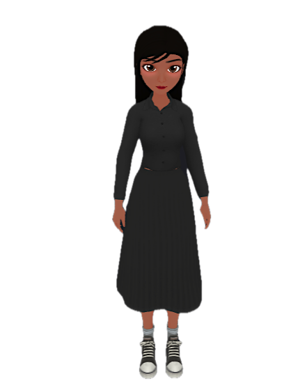
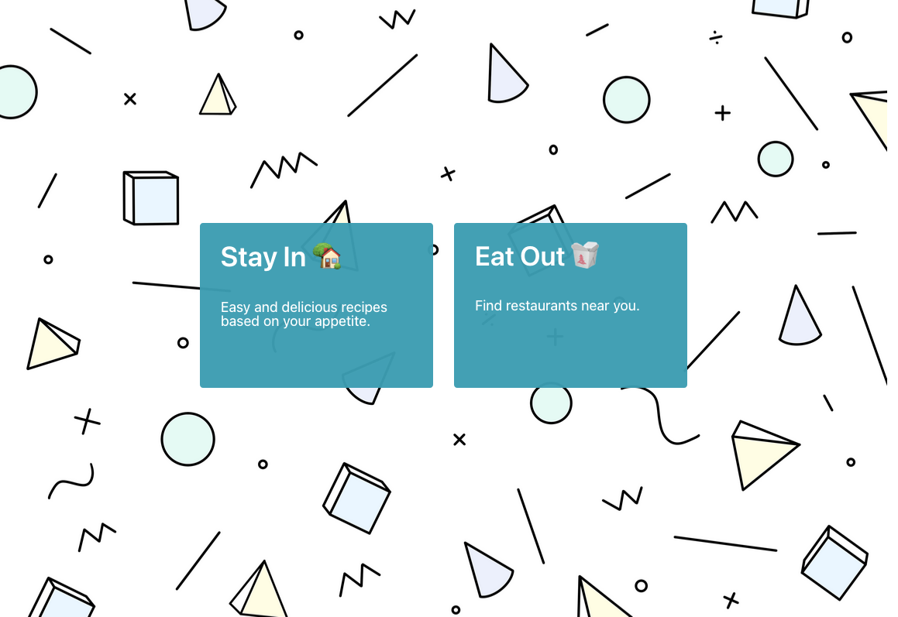

Hello! My name is Andrea Castillo, I am a Full Stack Web Developer. I currently reside in Mission, Texas. I'm very passionate about expanding my education when it comes to web development overall. All aspects interest me whether front-end/back-end/debugging/security pentesting(currrently educating myself on pentesting). I'm very driven, something about solving missing puzzle pieces or building the whole thing from nothing fuels my interest. I am a member of the alumni of UT Austin’s Center for Professional Education. My Gold-Seal Certificate of Completion for Full-Stack web development will be provided. As tough as it was to intake so many new skills in a short amount of time, graduating made it all worth the fast paced environment. Not only did I realize how much I enjoy this career field, I've been expanding my horizon since graduating and exploring different softwares/languages and so forth.
What2Eat is the name of the first group project I helped build/create. It's a website application that gives you the choices eat in-eat out. Eat in option gives you a search bar where you can input your food of choice. Ex:chicken. - therefore, you are given multiple recipes to choose from along with sources in case you want to try other recipes from the same chef. Eat out option will use our google maps API to locate resturaunts near you or you have the option of inputing a different location with the search bar. Below you'll see an image of the welcome page, click the image for a surprise.
This is a site I created myself using the skills I learned from my course. This site is HTML, CSS, JS based hence front-end work. Some people struggle with coming up with their own passcodes, or just dont have time to sit and think of something that they wont forget. My passcode-generater will throw out what you need, giving you opotions to add special characters, all lowercase/uppercase, its all optional and to your choosing.